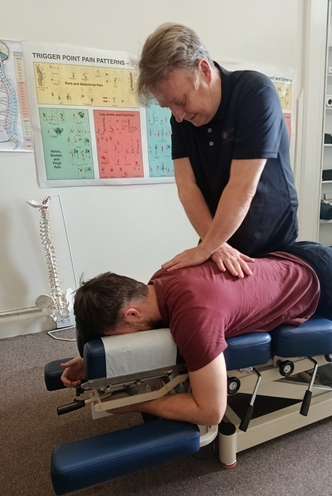

Health isn't just the absence of pain. It is the ability to do what you love without restriction. I believe that your body has an incredible ability to heal itself. It just needs the right support.
Born and raised in Tralee and educated in the green, my journey into chiropractic care started in university. After experiencing lower back issues following a sports injury, I was introduced to the chiropractic profession for the first time. That experience completely shifted my perspective on health care and set me on my professional path.
Over the last 20 years, I have had the privilege of owning and working in premier clinics across England, Scotland, and the Netherlands. These years were spent collaborating and learning from some of the leading chiropractors and physiotherapists in the world.
Today, I combine my dual background in chiropractic and physiotherapy to provide an evidence-based multi-modality approach to health care. This synergy ensures that my patients benefit from a comprehensive range of clinical tools, from manual joint mobilizations to corrective exercise prescriptions, all under one roof.
When I'm not in clinic helping patients, I'm usually spending time with my family and enjoying life back home in Kerry. I love being out in nature so you can either find me busy in the garden, walking the dogs on Banna beach, or kayaking around Fenit.
When you visit Change Chiropractic, we won't just treat your symptoms. We look for the root cause of your issue.